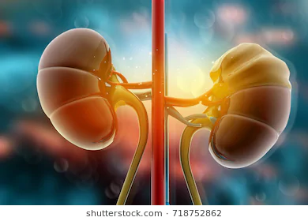

گردہ و پتھری و ورم
(1) سرپھوکہ 10 گرام تخم کاسنی 10 گرام تخم خربوزہ 10 گرام تخم کلتھی 5 گرام بڑی الائچی (کلاں) 1 عدد پانی میں ابال لیں دن میں 4 بار لیں دوسرے دن پھر نیا تیار کریں یہ قہوہ گردے کی پتھری , گردے کا سکیڑ, وہ افراد جنہوں نے غدود کا بار بار آپریشن کرایا ہو, انکے لئے بہترین نتائج دیتا ہے , گردے کی ورمی کیفیت میں بھی مفید ہے, (2) ثنا مکی 5 گرام گل گلاب 5 گرام سونف 5 گرام املتاس کی ٹکی 5/6 عدد الائچی کلاں 1 عدد اسکا قہوہ 3 کپ پانی میں اچھی طرح ابال لیں مگر دیگچی پر ڈھکن دےکر رکھیں آگ ہلکی ہونی چاہئیے جب اچھی طرح ابل کر ½1 کپ رہ جاۓ تو نی چے اتار کر چھان لیں اور مریض کو نیم گرم پلادیں دن میں ایک بار کافی ہے ان شاءاللہ گردے کا ورم, کریٹی نن, یوریا, گردے کا سکڑنا جیسی حالتوں میں انتہائی مؤثر ہے